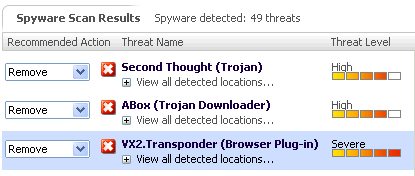

Microsoft vs Spyware
donderdag 6 januari 2005 | Nerdisme
Vanaf vandaag kan je een testversie downloaden van Microsofts eigen anti-spyware programma: Microsoft Windows AntiSpyware. Ik heb het meteen losgelaten op acht van onze Windows PC's — met fantastische resultaten! Een sterke aanrader! Een aantal highlights...
- De interface is — naar Microsoft normen — best te smaken. Een kind kan de was doen.
- Elke gebruiker levert zijn bijdrage aan een wereldwijd spyware-verklikkersnetwerk. Fijn!
- Het programma update zichzelf op geregelde tijdstippen
- Zeer compleet, zie 'Advanced Tools'
- Interessante informatie over gevonden spyware
- Overtuigende resultaten: op elke computer stond wel wat rommel (en meer: zie screenshot!) waar AdAware had overgekeken!

Dit nieuwe tooltje, Service Pack 2, Microsoft Windows Firewall en Microsoft Windows AntiVirus (dat binnen afzienbare tijd wordt gereleased, vermoed ik), vormen samen meer dan een stap in de goede richting. Dit was absoluut broodnodig!
Voor één keer mag Microsoft van mij deze software bundelen met de volgende versie van Windows (om zo helaas ook alle concurrenten van de kaart vegen). Dit is gewoon een deel van het besturingssysteem... van het Windows-besturingssysteem, welteverstaan (koop een Mac *kuch* sorry, ik kon het niet laten, hehe :-).
xiffyy op 7 januari 2005
Mwah, ze classificeren winpcap als spyware, en da's gewoon een libary voor etherreal onder windows. Niemand is perfect. Ben het wel met je eens dat dit in service pack 2 had moeten zitten. en standaard aan, net als de firewall. uitzetten kan altijd nog.